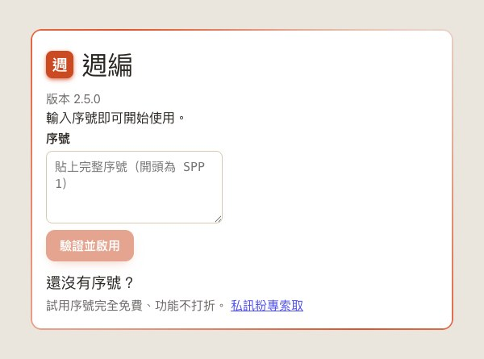
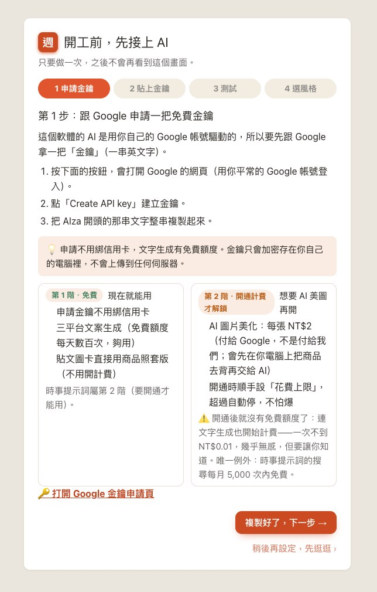
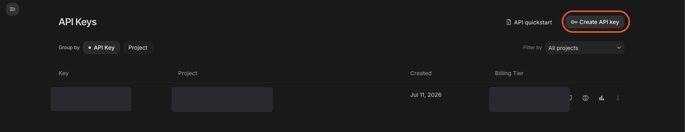
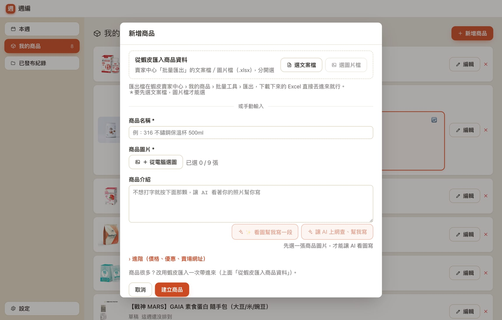
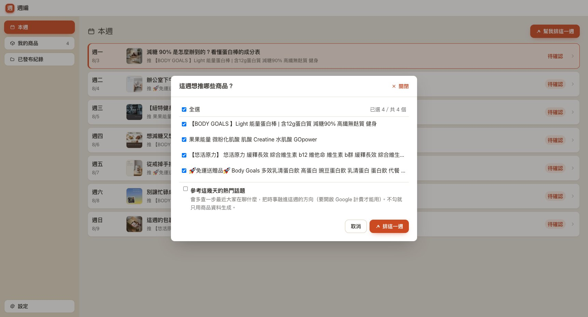
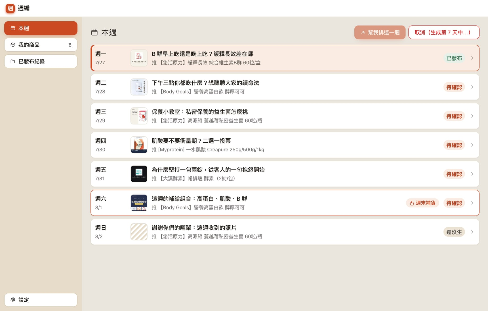
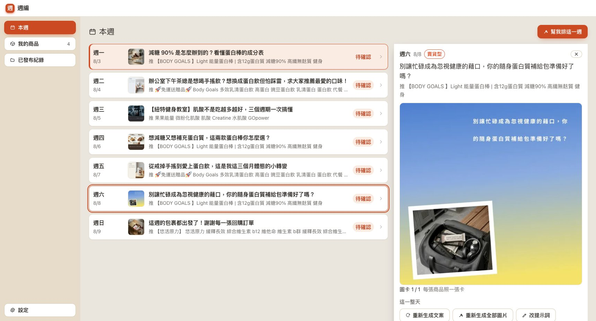
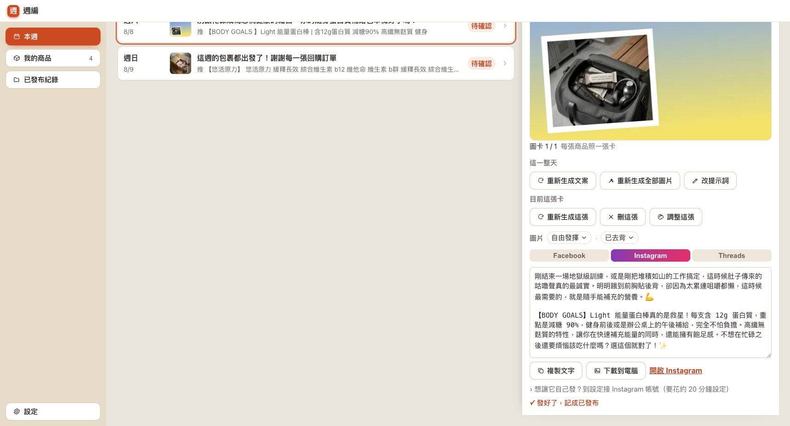
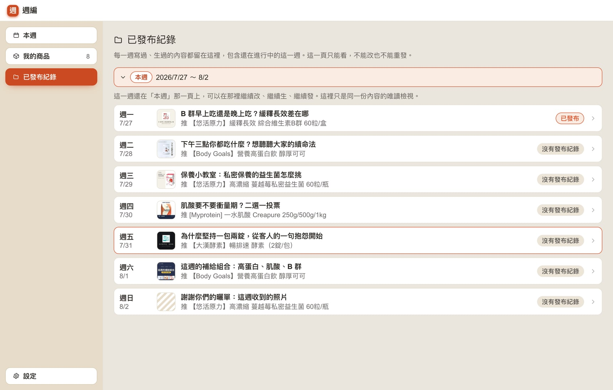
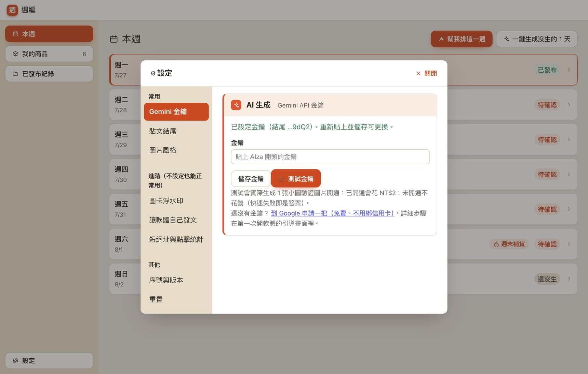

上手指引
從安裝到發出第一篇，大約二十分鐘
整條路三步：拿序號 → 裝好、貼上金鑰 → 排出第一週，大約二十分鐘。照著做，卡住直接私訊粉專，把畫面截圖給我們就好。
第 0 步：先拿序號。軟體裝好之後要輸入序號才打得開，所以動手前先到粉專私訊「我要試用」，拿到序號再往下走。免費、一人一組。
1. 安裝軟體
- 按這裡下載安裝檔（約 153 MB）。瀏覽器會問你要存到哪裡，存桌面最好找。
- 下載完，對著那個
.exe檔點兩下執行。
Windows 會跳出藍色的「Windows 已保護您的電腦」——這是正常的，不是病毒。
小型軟體沒有向微軟購買年費簽章憑證都會這樣。點畫面上的「其他資訊」，再點下面出現的「仍要執行」就可以繼續安裝。
不放心的話，不用相信我們，自己驗。
這個安裝檔已經送到 Google 旗下的 VirusTotal 公開掃描（一次跑 67 家防毒引擎，含 Microsoft、Kaspersky、趨勢科技）——歷來每一版的結果都是 0 家判定為惡意。本版（2.5.0）報告在同一個連結；若顯示「尚無報告」，代表這一版剛上架還沒被掃，把下載的檔案拖進去就會當場跑一次，結果任何人都看得到。
想自己驗檔案指紋的話（進階，可跳過）
想確認你下載到的檔案跟我們掃的是同一個，在下載資料夾按右鍵「在終端機開啟」或開
PowerShell，貼這一行：
Get-FileHash .\weekedit-2.5.0-setup.exe -Algorithm SHA256
跑出來的那串應該完全等於：
efae2734bf73ffe0c688b8d2ddfddbc3f0dd28120a626ff9426f2c4c3b00ab64
系統需求：Windows 10 或 11（64 位元）。安裝完桌面會出現「週編」的捷徑。
2. 輸入序號啟用
第一次打開軟體會要求輸入序號。把我們私訊給你的那一串貼進去，按啟用。

- 試用序號有到期日，到期後軟體轉為唯讀，你的資料不會被刪除。
- 換電腦、重灌之後，同一組序號可以再啟用一次，不用重買。
- 序號請不要外流。查證屬實會永久停權且不退費——停權前會先私訊通知你、給七天說明機會（條款第 7 條）。
3. 接上 AI：申請並貼上 Gemini 金鑰
軟體的 AI 是用你自己的 Google 帳號驅動的，所以要先跟 Google 拿一把金鑰。啟用後軟體會自動帶你走四個步驟，只要做一次。


-
按「打開 Google 金鑰申請頁」（或直接開
Google 的金鑰申請頁），用你平常的
Google 帳號登入，點
Create API key建立金鑰。 - 把
AIza開頭的那一整串複製起來（要整串，少一個字元就無效）。 - 回到軟體，貼進「貼上 AIza 開頭的金鑰」欄位。
- 按「測試」，軟體會實際請 AI 回話一次，確認金鑰有效。
- 挑一個圖片風格。之後隨時能換，先選「自由發揮」也可以。
只想先試試看：0 元，不用綁卡。文案與圖卡都在免費額度內——下面這些只在你想用 AI 圖片美化時才需要。
費用講在前面（這筆錢是付給 Google，不是付給我們）
- 申請金鑰不用綁信用卡。
- 三平台文案生成有免費額度，每天數百次，一般賣家夠用。
- 貼文圖卡直接用你的商品照套版，不用開計費。
- AI 圖片美化要在 Google 開啟計費，每張約 NT$2（軟體會先在你電腦上把商品去背，再交給 AI 換背景）。開通時順手設「花費上限」，超過會自動停。
- ⚠️ 一旦開啟計費，該專案的免費額度就沒有了，連文字生成也會開始計費（一次不到 NT$0.01）。
金鑰以加密方式存在你自己的電腦裡，不會上傳到任何伺服器。之後要換金鑰，到設定 → 常用 → Gemini 金鑰重新貼一次就好。
4. 把商品搬進來
有商品，AI 才排得出這週要發什麼。兩條路，商品多的話用第一條。

A. 從賣家中心批量匯入（幾百件一次帶進來）
- 到賣家中心 › 我的商品 › 批量工具 › 匯出，把 文案檔與圖片檔兩個 Excel 下載下來。
- 在軟體裡按「新增商品」，先按「選文案檔」選第一個檔。
- 接著按「選圖片檔」選第二個檔（順序不能反，要先有文案檔）。
- 在商品清單裡勾選要匯入的商品，按建立。
匯入完會有一張報告，告訴你哪幾件成功、哪幾件缺圖。缺圖的可以事後再補。
B. 手動加一件
- 商品名稱與商品圖片是必填，圖片最多 9 張。
- 商品介紹不想打字，可以按「看圖幫我寫一段」讓 AI 看著照片寫，或按「讓 AI 上網查、幫我寫」。
- 展開「進階」可以填價格、優惠、賣場網址。價格與優惠會自動帶進貼文圖卡的促銷膠囊；賣場網址會自動接到 FB／Threads 的文案結尾。
5. 排這一週
回到「本週」，按右上角「幫我排這一週」。

- 勾選這週想推的商品。勾越多，七天的內容越不會重複。
- 「參考這幾天的熱門話題」勾了會多查一步最近大家在聊什麼，把時事融進這週的方向（要開啟 Google 計費才能用，見第 3 步）；不勾就只用你的商品資料生成。
- 按「排這一週」之後，AI 會照七個角度排滿七天，再一天一天把文案、商品圖與圖卡生出來。
整週生成需要一點時間，過程中右上角會顯示「取消（生成第 N 天中…）」，按下去就停在下一天之前。已經生好的那幾天會留著，不會白花。

6. 一天一天看過、改過
在週表上點某一天，右邊會打開那一天的抽屜。生成的東西全部在這裡改完，不用跳頁。

- 最上面是貼文圖卡。一張商品照一張卡，多張時下面會有縮圖可以切換。
- 「這一整天」那一排：「重新生成文案」只換文字、圖卡一個位元組都不動；「重新生成全部圖片」只重做圖、文案不動；「改提示詞」可以先告訴 AI 這天想講什麼、圖片想拍成什麼樣子，再按上面兩顆。
- 「目前這張卡」那一排：重新生成這張、刪這張、調整這張（打開排版工具，可以拖字、換版型）。
- 文案直接在框裡改。IG、FB、Threads 三個分頁各一份，點分頁切換，改完點別的地方就會自動存。

「圖片」那一列在文案上方，隨時可以換這個商品的美化風格，以及要不要先去背。改了之後下一次生成才會用到，不會自動重做已經生好的圖。
7. 發出去
預設走複製貼上，一個字都不用設定就能用到底。
- 在抽屜下方按「複製文字」，文案就在剪貼簿裡了。
- 按「下載到電腦」把圖卡存成檔案。
- 按「開啟 Facebook／Instagram／Threads」到平台的發文框，貼上、選圖、發布。
- 回到軟體按「✓ 發好了，記成已發布」，那一天就會變成綠色的「已發布」。
按錯了可以再按一次取消記號。這個記號只是給你自己看的進度，不會去平台上做任何事。
接了 Meta 的人，抽屜最上面會多一顆「一鍵發布這一篇」，發成功之後會自動標記。手動那三顆按鈕仍然一直在——權杖過期或權限被撤時，那是你唯一的出口。
看之前發過什麼
側欄的「已發布紀錄」一週一份，唯讀，只能看不能改也不能重發。

8. 進階設定（不設也能正常用）
都在左下角的「設定」裡。分成常用、進階、其他三組。

- 貼文結尾（常用）：每個平台的固定結尾設定一次，之後每篇自動接上。
- 圖片風格（常用）：全機預設風格。單一商品可以在抽屜的「圖片」那一列另外指定。
- 圖卡浮水印：上傳店家 logo，之後生成的圖卡會自動蓋上。
- 讓軟體自己發文：綁定 Meta。要自己在 Meta 建一個應用程式，大約 20 分鐘，軟體裡有精靈一步步帶。不綁也完全不影響使用。
- 短網址與點擊統計：填 PicSee token 之後，貼文結尾的賣場連結會自動轉短網址，商品卡上就看得到有多少人點進去。
- 序號與版本：看目前的授權狀態、換序號、檢查更新。
9. 卡住的話
- 安裝時跳藍色警告——正常，見第 1 步。
- 圖卡一直生不出來，文案卻沒問題——多半是 Gemini 還沒開啟計費。免費方案對圖片模型的額度是零。到設定按一次「測試金鑰」就知道。
- 文案讀起來很怪——用抽屜裡的「改提示詞」告訴 AI 這天想講什麼，再按「重新生成文案」。或直接在文字框裡改，改完就是你的版本。
- 其他任何狀況——私訊粉專，附上畫面截圖。工作日 48 小時內回覆。